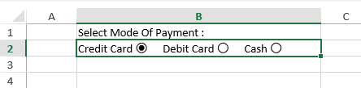

SpreadJS allows users to create radio button lists within the cells of the spreadsheet.
A radio button list celltype provides users with the ability to choose and select a single item from a list of several options that are listed within a cell in the worksheet. It refers to a group of radio buttons (small round shaped option buttons) embedded within a single cell. Users can click the radio button in the list in order to select or deselect a specific option.
Radio button list celltype is helpful when you want to create a poll or questionnaire containing a list of multiple options but only a single response is expected from the end user.
Example - Let's say you're working on a sales application where you want to keep a record of the payment mode used by the customers while purchasing a particular product. In this scenario, using a radio button list celltype in the spreadsheet will help users to choose only a single payment mode from a list of available payment options (like Cash, Credit Card or Debit Card), as shown in the snapshot below:

While working with radio button list cell type in SpreadJS, users can execute the following tasks in order to customize it as per their specific preferences:
Refer to the following example code to create a basic radio button list in a cell while working with spreadsheets.
| JavaScript |
Copy Code
|
|---|---|
<script>
$(document).ready(function () {
// Initializing Spread
var spread = new GC.Spread.Sheets.Workbook(document.getElementById('ss'), { sheetCount: 1 });
// Get the activesheet
var activeSheet = spread.getSheet(0);
// This example creates a radioButtonList celltype
var radioButtonListCellType = new GC.Spread.Sheets.CellTypes.RadioButtonList();
activeSheet.setText(0, 1, "Select Mode Of Payment : ", GC.Spread.Sheets.SheetArea.viewport);
radioButtonListCellType.items([{ text: "Credit Card", value: 1 },
{ text: "Debit Card", value: 2 }, { text: "Cash", value: 3 }]);
radioButtonListCellType.isFlowLayout(true);
// Configure the direction of the radio button list to horizontal
radioButtonListCellType.direction(GC.Spread.Sheets.CellTypes.Direction.horizontal);
// Configure the space for two items in the radio button list
radioButtonListCellType.itemSpacing({
horizontal: 20, vertical: 10
});
// Configure the text of radio button's position, only support left and right
radioButtonListCellType.textAlign(GC.Spread.Sheets.CellTypes.CheckBoxTextAlign.left);
// Configure the radio button's size, only support number and "auto"
radioButtonListCellType.boxSize(20);
activeSheet.getCell(1, 1).cellType(radioButtonListCellType);
// Configure the row height
activeSheet.setRowHeight(1, 30.0, GC.Spread.Sheets.SheetArea.viewport);
// Configure the column width
activeSheet.setColumnWidth(1, 300.0, GC.Spread.Sheets.SheetArea.viewport);
});
</script>
|
|